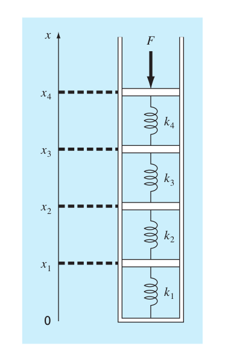
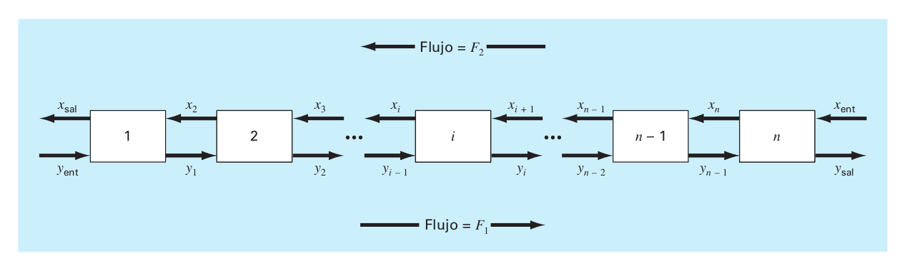

Proyecto 2
- Los sistemas idealizados de masa resorte tiene aplicaciones numerosas en Ingeniería. en la siguiente figura se muestra un arreglo de 4 resortes en serie comprimidos por una fuerza de 2 000 kg. En el equilibrio, es posible desarrollar ecuaciones de balance de fuerzas si se definen las relaciones entre los resortes

\[k_2(x_2-x_1)=k_1x_1\] \[k_3(x_3-x_2)=k_2(x_2-x_1)\] \[k_4(x_4-x_3)=k_3(x_3-x_2)\] \[F=k_4(x_4- x_3)\]
donde las \(k\) son constantes de los resortes,\(k_1=150\),\(k_2=50\),\(k_3=75\) y \(k_2=225\) \(N/m\)
- Determine las elongaciones de los resortes \(x_1\), \(x_2\), \(x_3\) y \(x_4\).
- Estudie el tiempo de computación para cada método.
- Encuentre el error del residuo para cada método.
- ¿Qué método usted recomendaría?
Suponga que se tiene un sistema de 20 resortes en serie, de forma similar al ejercicio anterior
Describa un sistema de ecuaciones que describa el sistema de resortes, suponiendo que se simulan linealizados, es decir, que la fuerza de cada resorte es proporcional a su elongación.
Suponiendo que \(k_i=100+i\) \(N/m\) para \(i=1,2,...,20\) y \(F=1000\) \(N\), determine las elongaciones de los resortes \(x_1\), \(x_2\), \(x_3\) y \(x_4\).
Estudie el tiempo de computación para cada método.
Encuentre el error del residuo para cada método.
¿Qué método usted recomendaría?
- En muchas aplicaciones de ingeniería se debe calcular la inversa de una matriz.
Escriba una algoritmo para calcular la inversa de una matriz cuadrada de \(n\times n\). Usando soluciones de sistemas de ecuaciones lineales (use el que usted considere más adecuado)
Estudie el tiempo de computación para cada método.
Verifique que \(A*A^{-1}=I\), donde \(A^{-1}\), es la matriz que usted encontró.
El resultado fue el esperado, analice la situación.
- Proceso de extracción en etapas En un sistema de proceso de extracción por etapas uan corriente que contiene una fracción de peso \(Y_{ent}\) de un producto químico ingresa por la izquierda con una tasa de flujo de masa \(F_1\). En forma simultanea un solvente que lleva una fracción de peso \(X_{ent}\) del mismo producto químico entra por la derecha con una tasa de flujo \(F_2\). Así por la etapa \(i\), en el balance de la masa se representa como
\[F_1Y_{i-1}+F_2X_{i+1}=F_1Y_i+F_2X_i,\]
en cada etapa, se supone que se establece el equilibrio entre \(Y_i\) y \(X_i\) como en
\[K=\frac{X_i}{Y_i}\]
donde \(K\) se denomina coeficiente de distribución. El proceso de extracción se puede representar como en la figura

en la ecuación anterior se puede despejar \(X_i\) y sustituir para obtener
\[Y_{i-1}-\Big(1+\frac{F_2}{F_1}K\Big)Y_{i}+\Big(\frac{F_2}{F_1}K\Big)Y_{i+1}=0\]
Si \(F_1=400\) \(kg/h\), \(Y_{ent}=0.1\), \(F_2=800\) \(kg/h\), \(X_{ent}=0\) y \(K= 5\), determine la composición de la corriente de salida \(Y_{sal}\) y \(X_{sal}\), si emplea un reactor de 5 etapas, de 10 etapas y de 20 etapas. Observe que la ecuación anterior deb modificarse para tomar en cuenta las fracciones de peso del flujo de entrada cuando se aplique a la primera y última ecuación.
- Encuentre la solución para 5, 10 y 20 etapas usando factorización LU, Gauss-Seidel y Jacobi, (use una tolerancia de \(10^{-6}\)).
- Estudie el tiempo de computación para cada método.
- Encuentre el error del residuo para cada método.
- ¿Qué método usted recomendaría? Sacado de Metods numericos para ingenería de Steven C. Chapra